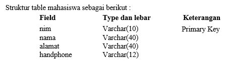
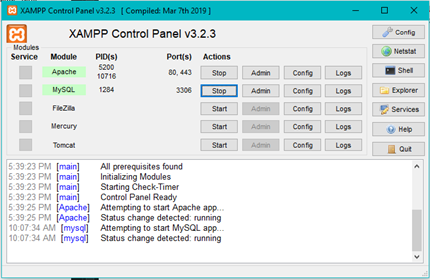
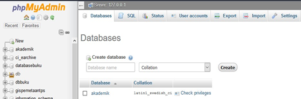
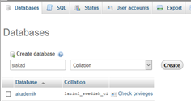
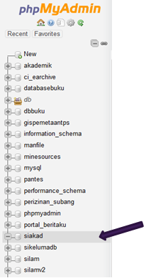
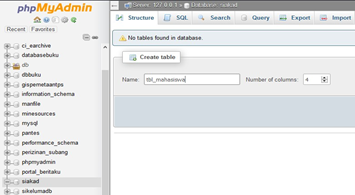
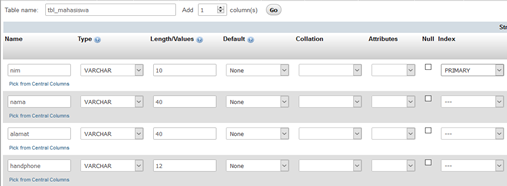
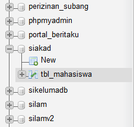
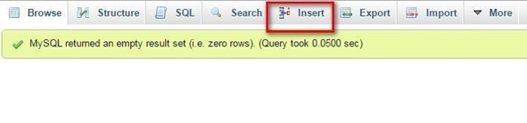
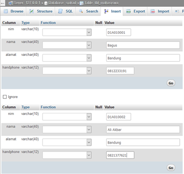

Sekilas tentang saya :
Nama Saya Satia Adi Wibawa, nama panggilan saya Satia, kadang di panggi Adi. umur saya 21 tahun, saya seorang karyawan suasta dan seorang mahasiswa karyawan. hobi saya bermain bola, dan bermain basket
| Ig :Satia Adi | Line :Satia Adi |
| Twitter : Satia Adi | Facebook : Satia Adi |
Ditulis Oleh Satia Adi Wibawa. pada 12 Oktober 2020.
Pertama Buka XAMPP lalu aktifkan service mysql seperti gambar dibawah ini
Setelah service mysql aktif lalu buka phpMyAdmin melalui browser dengan mengetikkan URL localhost/phpMyAdmin
Setelah mengetikkan URL, maka akan tampil halaman seperti gambar dibawah ini
Pada halaman database ini, buat database baru dengan mengetikkan nama database dalam Text Field database kemudian klik tombol Create, perhatikan gambar dibawah ini. Gambar Membuat database baru
Setelah proses pembuatan database selesai, kita akan mendapatkan sebuah database baru sudah dibuat dan list database yang ada pada phpmyadmin bisa kita lihat pada bagian kiri dan halaman phpmyadmin.
Gambar Database siakad telah dibuat
Untuk membuat table melalui phpmyadmin, anda tinggal klik nama database yang berada di sebelah kiri seperti pada gambar diatas, kemudian klik pada nama database, untuk memastikan bahwa table yang akan dibuat berada dalam database yang kita inginkan.
Setelah anda klik nama database di bagian kiri halaman phpmyadmin, akan muncul halaman untuk membuat table baru di bagian kanan halaman, kemudian isikan nama table serta jumlah kolom kemudian klik tombol Go.
Gambar membuat table baru
Untuk latihan, kita membuat table tbl_mahasiswa dengan jumlah kolom 4, seperti yang terlihat pada gambar.
Isikanlah seluruh kolom atau field yang sudah kita susun lengkap dengan jumlah kolom beserta lebar kolomnnya, untuk menentukan primary key sebuah table, anda klik pada bagian index, kemudian pilih PRIMARY, pastikan anda memilih primary key sesuai dengan yang sudah di rencanakan. Untuk table ini kita membuat table tbl_mahasiswa.
Setelah semua kolom sudah diisikan, klik tombol save. Ilustrasi gambar bisa dilihat pada gambar berikut
Gambar membuat tabel tbl_mahasiswa
Jika proses ini selesai, anda akan melihat di bagian kiri halaman phpMyAdmin sudah ada table baru yang kita buat yaitu table tbl_mahasiswa yang berada dalam database siakad
Gambar tbl_mahasiswa sudah berhasil dibuat
Setelah table terbentuk, saatnya untuk mengisikan data, phpMyadmin secara visual menyediakan form untuk pengisian data. Klik pada nama Table yang ada pada bagian kiri halaman phpMyAdmin contoh pada latihan kita adalah table tbl_mahasiswa, lalu klik tab Insert yang berada pada bagian atas phpMyAdmin.
Gambar : menu Insert di phpMyAdmin
Akan muncul halaman pengisian data dan isikan data sample yang di inginkan, sebagai contoh disini kita memasukan 2 sample data. lalu klik tombol Go untuk menyimpan data yang sudah di inputkan, perhatikan contoh pada gambar.

Gambar : Pengisian data pada phpMyAdmin